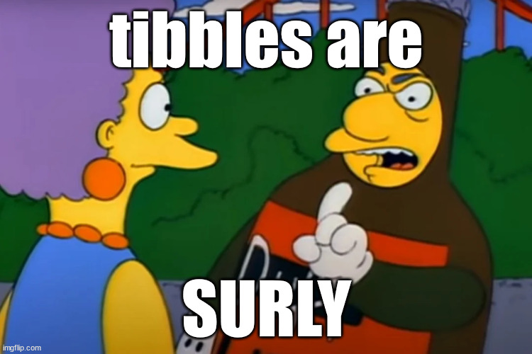

Learning objectives:
- Learn about different types of vectors and their attributes
- Navigate through vector types and their value types
- Venture into factors and date-time objects
- Discuss the differences between data frames and tibbles
- Do not get absorbed by the
NA and NULL black hole
Session Info
#> R version 4.5.1 (2025-06-13 ucrt)
#> Platform: x86_64-w64-mingw32/x64
#> Running under: Windows 11 x64 (build 26100)
#>
#> Matrix products: default
#> LAPACK version 3.12.1
#>
#> locale:
#> [1] LC_COLLATE=English_United States.utf8
#> [2] LC_CTYPE=English_United States.utf8
#> [3] LC_MONETARY=English_United States.utf8
#> [4] LC_NUMERIC=C
#> [5] LC_TIME=English_United States.utf8
#>
#> time zone: America/Chicago
#> tzcode source: internal
#>
#> attached base packages:
#> [1] stats graphics grDevices utils datasets methods base
#>
#> other attached packages:
#> [1] palmerpenguins_0.1.1 gt_1.0.0 dplyr_1.1.4
#>
#> loaded via a namespace (and not attached):
#> [1] digest_0.6.37 R6_2.6.1 fastmap_1.2.0 tidyselect_1.2.1
#> [5] xfun_0.52 magrittr_2.0.3 glue_1.8.0 tibble_3.3.0
#> [9] knitr_1.50 pkgconfig_2.0.3 htmltools_0.5.8.1 rmarkdown_2.29
#> [13] generics_0.1.4 lifecycle_1.0.4 xml2_1.3.8 cli_3.6.5
#> [17] vctrs_0.6.5 compiler_4.5.1 tools_4.5.1 pillar_1.11.0
#> [21] evaluate_1.0.4 yaml_2.3.10 rlang_1.1.6 jsonlite_2.0.0
#> [25] keyring_1.4.1
Aperitif
Counting Penguins
Consider this code to count the number of Gentoo penguins in the penguins data set. We see that there are 124 Gentoo penguins.
In
One subtle error can arise in trying out %in% here instead.
Fix: base R
Fix: dplyr
Motivation
- What are the different types of vectors?
- How does this affect accessing vectors?
Side Quest: Looking up the %in% operator
If you want to look up the manual pages for the %in% operator with the ?, use backticks:
and we find that %in% is a wrapper for the match() function.
Types of Vectors

Image Credit: Advanced R
Two main types:
- Atomic: Elements all the same type.
- List: Elements are different Types.
Closely related but not technically a vector:
- NULL: Null elements. Often length zero.
Atomic Vectors
Types of atomic vectors
- Logical: True/False
- Integer: Numeric (discrete, no decimals)
- Double: Numeric (continuous, decimals)
- Character: String
Vectors of Length One
Scalars are vectors that consist of a single value.
Logicals
Doubles
Integers
Integers must be followed by L and cannot have fractional values
Pop Quiz: Why “L” for integers?
Wickham notes that the use of L dates back to the C programming language and its “long int” type for memory allocation.
Strings
Strings can use single or double quotes and special characters are escaped with
Longer
There are several ways to make longer vectors:
1. With single values inside c() for combine.
2. With other vectors
Side Quest: rlang
{rlang} has vector constructor functions too:
rlang::lgl(...)rlang::int(...)rlang::dbl(...)rlang::chr(...)
They look to do both more and less than c().
- More:
- Enforce type
- Splice lists
- More types:
rlang::bytes(), rlang::cpl(...)
- Less:
Note: currently has questioning lifecycle badge, since these constructors may get moved to vctrs
Type and Length
We can determine the type of a vector with typeof() and its length with length()
| name |
value |
typeof() |
length() |
| lgl_var |
TRUE, FALSE |
logical |
2 |
| int_var |
1L, 6L, 10L |
integer |
3 |
| dbl_var |
1, 2.5, 4.5 |
double |
3 |
| chr_var |
'these are', 'some strings' |
character |
2 |
Side Quest: Penguins
Missing values
Contagion
For most computations, an operation over values that includes a missing value yields a missing value (unless you’re careful)
Exceptions
Innoculation
To search for missing values use is.na()
Side Quest: NA Types
Each type has its own NA type
- Logical:
NA
- Integer:
NA_integer
- Double:
NA_double
- Character:
NA_character
This may not matter in many contexts.
But this does matter for operations where types matter like dplyr::if_else().
Testing
What type of vector is.*() it?
Test data type:
- Logical:
is.logical()
- Integer:
is.integer()
- Double:
is.double()
- Character:
is.character()
What type of object is it?
Don’t test objects with these tools:
is.vector()is.atomic()is.numeric()
They don’t test if you have a vector, atomic vector, or numeric vector; you’ll need to carefully read the documentation to figure out what they actually do (preview: attributes)
Side Quest: rlang
Instead, maybe, use {rlang}
rlang::is_vectorrlang::is_atomic
See more here
Coercion
Automatic
Two contexts for automatic coercion:
- Combination
- Mathematical
Coercion by Combination:
#> chr [1:2] "TRUE" "TRUE"
Coercion by Mathematical operations:
Explicit
| name |
value |
as.logical() |
as.integer() |
as.double() |
as.character() |
| lgl_var |
TRUE, FALSE |
TRUE FALSE |
1 0 |
1 0 |
'TRUE' 'FALSE' |
| int_var |
1L, 6L, 10L |
TRUE TRUE TRUE |
1 6 10 |
1 6 10 |
'1' '6' '10' |
| dbl_var |
1, 2.5, 4.5 |
TRUE TRUE TRUE |
1 2 4 |
1.0 2.5 4.5 |
'1' '2.5' '4.5' |
| chr_var |
'these are', 'some strings' |
NA NA |
NA_integer |
NA_double |
'these are', 'some strings' |
But note that coercion may fail in one of two ways, or both:
Exercises
- How do you create raw and complex scalars?
Answer(s)
- Test your knowledge of the vector coercion rules by predicting the output of the following uses of c():
Answer(s)
- Why is
1 == "1" true? Why is -1 < FALSE true? Why is "one" < 2 false?
Answer(s)
These comparisons are carried out by operator-functions (==, <), which coerce their arguments to a common type. In the examples above, these types will be character, double and character: 1 will be coerced to “1”, FALSE is represented as 0 and 2 turns into “2” (and numbers precede letters in lexicographic order (may depend on locale)).
- Why is the default missing value, NA, a logical vector? What’s special about logical vectors?
Answer(s)
The presence of missing values shouldn’t affect the type of an object. Recall that there is a type-hierarchy for coercion from character → double → integer → logical. When combining NAs with other atomic types, the NAs will be coerced to integer (NA_integer_), double (NA_real_) or character (NA_character_) and not the other way round. If NA were a character and added to a set of other values all of these would be coerced to character as well.
- Precisely what do
is.atomic(), is.numeric(), and is.vector() test for?
Answer(s)
The documentation states that:
is.atomic() tests if an object is an atomic vector (as defined in Advanced R) or is NULL (!).is.numeric() tests if an object has type integer or double and is not of class factor, Date, POSIXt or difftime.is.vector() tests if an object is a vector (as defined in Advanced R) or an expression and has no attributes, apart from names.
Atomic vectors are defined in Advanced R as objects of type logical, integer, double, complex, character or raw. Vectors are defined as atomic vectors or lists.
Attributes
Attributes are name-value pairs that attach metadata to an object(vector).
- Name-value pairs: attributes have a name and a value
- Metadata: not data itself, but data about the data
How?
Getting and Setting
Three functions:
- retrieve and modify single attributes with
attr()
- retrieve en masse with
attributes()
- set en masse with
structure()
Single attribute
Use attr()
Multiple attributes
To set multiple attributes, use structure() To get multiple attributes, use attributes()
Why
Three particularly important attributes:
- names - a character vector giving each element a name
- dimension - (or dim) turns vectors into matrices and arrays
- class - powers the S3 object system (we’ll learn more about this in chapter 13)
Most attributes are lost by most operations. Only two attributes are routinely preserved: names and dimension.
Names
Three Four ways to name:
- You can remove names from a vector by using
x <- unname(x) or names(x) <- NULL.
- Thematically but not directly related: labelled class vectors with
haven::labelled()
Dimensions
Create matrices and arrays with matrix() and array(), or by using the assignment form of dim():
#> [,1] [,2] [,3]
#> [1,] 1 3 5
#> [2,] 2 4 6
#> , , 1
#>
#> [,1] [,2] [,3]
#> [1,] 1 3 5
#> [2,] 2 4 6
#>
#> , , 2
#>
#> [,1] [,2] [,3]
#> [1,] 7 9 11
#> [2,] 8 10 12
#>
#> , , 3
#>
#> [,1] [,2] [,3]
#> [1,] 13 15 17
#> [2,] 14 16 18
#>
#> , , 4
#>
#> [,1] [,2] [,3]
#> [1,] 19 21 23
#> [2,] 20 22 24
#> [,1] [,2] [,3]
#> [1,] 1 3 5
#> [2,] 2 4 6
#> , , 1
#>
#> [,1] [,2] [,3]
#> [1,] 1 3 5
#> [2,] 2 4 6
#>
#> , , 2
#>
#> [,1] [,2] [,3]
#> [1,] 7 9 11
#> [2,] 8 10 12
#>
#> , , 3
#>
#> [,1] [,2] [,3]
#> [1,] 13 15 17
#> [2,] 14 16 18
#>
#> , , 4
#>
#> [,1] [,2] [,3]
#> [1,] 19 21 23
#> [2,] 20 22 24
Functions for working with vectors, matrices and arrays:
names() |
rownames(), colnames() |
dimnames() |
length() |
nrow(), ncol() |
dim() |
c() |
rbind(), cbind() |
abind::abind() |
| — |
t() |
aperm() |
is.null(dim(x)) |
is.matrix() |
is.array() |
- Caution: A vector without a
dim attribute set is often thought of as 1-dimensional, but actually has NULL dimensions.
- One dimension?
Exercises
- How is
setNames() implemented? How is unname() implemented? Read the source code.
Answer(s)
setNames() is implemented as:
Because the data argument comes first, setNames() also works well with the magrittr-pipe operator. When no first argument is given, the result is a named vector (this is rather untypical as required arguments usually come first):
unname() is implemented in the following way:
unname() removes existing names (or dimnames) by setting them to NULL.
- What does
dim() return when applied to a 1-dimensional vector? When might you use NROW() or NCOL()?
Answer(s)
dim() will return NULL when applied to a 1d vector.
One may want to use NROW() or NCOL() to handle atomic vectors, lists and NULL values in the same way as one column matrices or data frames. For these objects nrow() and ncol() return NULL:
- How would you describe the following three objects? What makes them different from
1:5?
Answer(s)
- An early draft used this code to illustrate
structure():
But when you print that object you don’t see the comment attribute. Why? Is the attribute missing, or is there something else special about it?
Answer(s)
The documentation states (see ?comment):
Contrary to other attributes, the comment is not printed (by print or print.default).
Also, from ?attributes:
Note that some attributes (namely class, comment, dim, dimnames, names, row.names and tsp) are treated specially and have restrictions on the values which can be set.
We can retrieve comment attributes by calling them explicitly:
Class - S3 atomic vectors

Credit: Advanced R by Hadley Wickham
Having a class attribute turns an object into an S3 object.
What makes S3 atomic vectors different?
- behave differently from a regular vector when passed to a generic function
- often store additional information in other attributes
Four important S3 vectors used in base R:
- Factors (categorical data)
- Dates
- Date-times (POSIXct)
- Durations (difftime)
Factors
A factor is a vector used to store categorical data that can contain only predefined values.
Factors are integer vectors with:
- Class: “factor”
- Attributes: “levels”, or the set of allowed values
#> colors
#> blue green red
#> 1 2 3
#> a_factor
#> red blue green yellow
#> 3 1 2 0
#> $levels
#> [1] "red" "blue" "green" "yellow"
#>
#> $class
#> [1] "factor"
Custom Order
Factors can be ordered. This can be useful for models or visualizations where order matters.
#> [1] high med low med high low med high
#> Levels: low < med < high
#> values
#> high low med
#> 3 2 3
#> ordered_factor
#> low med high
#> 2 3 3
Dates
Dates are:
- Double vectors
- With class “Date”
- No other attributes
The double component represents the number of days since since the Unix epoch 1970-01-01
Date-times
There are 2 Date-time representations in base R:
- POSIXct, where “ct” denotes calendar time
- POSIXlt, where “lt” designates local time
We’ll focus on POSIXct because:
- Simplest
- Built on an atomic (double) vector
- Most appropriate for use in a data frame
Let’s now build and deconstruct a Date-time
#> [1] "2025-08-04 15:39:49 EDT"
#> $class
#> [1] "POSIXct" "POSIXt"
#>
#> $tzone
#> [1] "America/New_York"
#> [1] "2025-08-04 21:39:49 CEST"
#> [1] 1708623296
#> attr(,"tzone")
#> [1] "EST"
Durations
Durations represent the amount of time between pairs of dates or date-times.
- Double vectors
- Class: “difftime”
- Attributes: “units”, or the unit of duration (e.g., weeks, hours, minutes, seconds, etc.)
#> Time difference of 1 mins
#> $class
#> [1] "difftime"
#>
#> $units
#> [1] "mins"
#> Time difference of 20273 days
See also:
Exercises
- What sort of object does
table() return? What is its type? What attributes does it have? How does the dimensionality change as you tabulate more variables?
Answer(s)
table() returns a contingency table of its input variables. It is implemented as an integer vector with class table and dimensions (which makes it act like an array). Its attributes are dim (dimensions) and dimnames (one name for each input column). The dimensions correspond to the number of unique values (factor levels) in each input variable.
- What happens to a factor when you modify its levels?
Answer(s)
The underlying integer values stay the same, but the levels are changed, making it look like the data has changed.
- What does this code do? How do
f2 and f3 differ from f1?
Answer(s)
For f2 and f3 either the order of the factor elements or its levels are being reversed. For f1 both transformations are occurring.
Lists
- sometimes called a generic vector or recursive vector
- Recall (section 2.3.3): each element is really a reference to another object
- an be composed of elements of different types (as opposed to atomic vectors which must be of only one type)
Constructing
Simple lists:
#> [[1]]
#> [1] TRUE FALSE
#>
#> [[2]]
#> [1] 1 2 3 4 5 6 7 8 9 10 11 12 13 14 15 16 17 18 19 20
#>
#> [[3]]
#> [1] 1.2 2.3 3.4
#>
#> [[4]]
#> [1] "primo" "secundo" "tercio"
#> List of 4
#> $ : logi [1:2] TRUE FALSE
#> $ : int [1:20] 1 2 3 4 5 6 7 8 9 10 ...
#> $ : num [1:3] 1.2 2.3 3.4
#> $ : chr [1:3] "primo" "secundo" "tercio"
#> [[1]]
#> [1] TRUE FALSE
#> [[1]]
#> [1] 1 2 3 4 5 6 7 8 9 10 11 12 13 14 15 16 17 18 19 20
#> [[1]]
#> [1] 1.2 2.3 3.4
#> [[1]]
#> [1] "primo" "secundo" "tercio"
Even Simpler List
Nested lists:
#> List of 1
#> $ :List of 1
#> ..$ :List of 1
#> .. ..$ :List of 1
#> .. .. ..$ : num 1
Like JSON.
Combined lists
#> List of 2
#> $ :List of 2
#> ..$ : num 1
#> ..$ : num 2
#> $ :List of 2
#> ..$ : num 3
#> ..$ : num 4
#> List of 4
#> $ : num 1
#> $ : num 2
#> $ : num 3
#> $ : num 4
#> List of 4
#> $ : num 1
#> $ : num 2
#> $ : logi TRUE
#> $ : logi FALSE
Testing
Check that is a list:
is.list()- `rlang::is_list()``
The two do the same, except that the latter can check for the number of elements
Coercion
Use as.list()
#> [[1]]
#> [1] 1
#>
#> [[2]]
#> [1] 2
#>
#> [[3]]
#> [1] 3
Matrices and arrays
Although not often used, the dimension attribute can be added to create list-matrices or list-arrays.
#> [,1] [,2]
#> [1,] integer,3 TRUE
#> [2,] "a" 1
Exercises
- List all the ways that a list differs from an atomic vector.
Answer(s)
- Atomic vectors are always homogeneous (all elements must be of the same type). Lists may be heterogeneous (the elements can be of different types) as described in the introduction of the vectors chapter.
- Atomic vectors point to one address in memory, while lists contain a separate reference for each element. (This was described in the list sections of the vectors and the names and values chapters.)
- Subsetting with out-of-bounds and NA values leads to different output. For example, [ returns NA for atomics and NULL for lists. (This is described in more detail within the subsetting chapter.)
- Why do you need to use
unlist() to convert a list to an atomic vector? Why doesn’t as.vector() work?
Answer(s)
A list is already a vector, though not an atomic one! Note that as.vector() and is.vector() use different definitions of “vector!”
- Compare and contrast
c() and unlist() when combining a date and date-time into a single vector.
Answer(s)
Date and date-time objects are both built upon doubles. While dates store the number of days since the reference date 1970-01-01 (also known as “the Epoch”) in days, date-time-objects (POSIXct) store the time difference to this date in seconds.
As the c() generic only dispatches on its first argument, combining date and date-time objects via c() could lead to surprising results in older R versions (pre R 4.0.0):
In the first statement above c.Date() is executed, which incorrectly treats the underlying double of dttm_ct (3600) as days instead of seconds. Conversely, when c.POSIXct() is called on a date, one day is counted as one second only.
We can highlight these mechanics by the following code:
As of R 4.0.0 these issues have been resolved and both methods now convert their input first into POSIXct and Date, respectively.
However, as c() strips the time zone (and other attributes) of POSIXct objects, some caution is still recommended.
A package that deals with these kinds of problems in more depth and provides a structural solution for them is the {vctrs} package9 which is also used throughout the tidyverse.10
Let’s look at unlist(), which operates on list input.
We see again that dates and date-times are internally stored as doubles. Unfortunately, this is all we are left with, when unlist strips the attributes of the list.
To summarise: c() coerces types and strips time zones. Errors may have occurred in older R versions because of inappropriate method dispatch/immature methods. unlist() strips attributes.
Data frames and tibbles
Credit: Advanced R by Hadley Wickham
Data frame
A data frame is a:
- Named list of vectors (i.e., column names)
- Attributes:
- (column)
names
row.names- Class: “data frame”
#> col1 col2
#> 1 1 un
#> 2 2 deux
#> 3 3 trois
#> $names
#> [1] "col1" "col2"
#>
#> $class
#> [1] "data.frame"
#>
#> $row.names
#> [1] 1 2 3
Unlike other lists, the length of each vector must be the same (i.e. as many vector elements as rows in the data frame).
Tibble
Created to relieve some of the frustrations and pain points created by data frames, tibbles are data frames that are:
- Lazy (do less)
- Surly (complain more)
Lazy
Tibbles do not:
- Coerce strings
- Transform non-syntactic names
- Recycle vectors of length greater than 1
Coerce strings
#> Factor w/ 4 levels "bro","don't",..: 2 3 4 1
#> chr [1:4] "don't" "factor" "me" "bro"
Transform non-syntactic names
Recycle vectors of length greater than 1
#> Error in `tibble::tibble()`:
#> ! Tibble columns must have compatible sizes.
#> • Size 4: Existing data.
#> • Size 2: Column `col2`.
#> ℹ Only values of size one are recycled.
Surly
Tibbles do only what they’re asked and complain if what they’re asked doesn’t make sense:
- Subsetting always yields a tibble
- Complains if cannot find column
Subsetting always yields a tibble
#> tibble [4 × 1] (S3: tbl_df/tbl/data.frame)
#> $ col1: num [1:4] 1 2 3 4
Complains if cannot find column
#> Warning: Unknown or uninitialised column: `col`.
One more difference
tibble() allows you to refer to variables created during construction
#> # A tibble: 3 × 2
#> x y
#> <int> <dbl>
#> 1 1 2
#> 2 2 4
#> 3 3 6
Side Quest: Row Names
- character vector containing only unique values
- get and set with
rownames()
- can use them to subset rows
#> age hair
#> Bob 35 blond
#> Susan 27 brown
#> Sam 18 black
#> [1] "Bob" "Susan" "Sam"
#> age hair
#> Bob 35 blond
#> [1] "Susan" "Bob" "Sam"
#> age hair
#> Bob 27 brown
There are three reasons why row names are undesirable:
- Metadata is data, so storing it in a different way to the rest of the data is fundamentally a bad idea.
- Row names are a poor abstraction for labelling rows because they only work when a row can be identified by a single string. This fails in many cases.
- Row names must be unique, so any duplication of rows (e.g. from bootstrapping) will create new row names.
Printing
Data frames and tibbles print differently
#> age hair
#> Susan 35 blond
#> Bob 27 brown
#> Sam 18 black
#> # A tibble: 3 × 2
#> age hair
#> <dbl> <chr>
#> 1 35 blond
#> 2 27 brown
#> 3 18 black
Subsetting
Two undesirable subsetting behaviours:
- When you subset columns with
df[, vars], you will get a vector if vars selects one variable, otherwise you’ll get a data frame, unless you always remember to use df[, vars, drop = FALSE].
- When you attempt to extract a single column with
df$x and there is no column x, a data frame will instead select any variable that starts with x. If no variable starts with x, df$x will return NULL.
Tibbles tweak these behaviours so that a [ always returns a tibble, and a $ doesn’t do partial matching and warns if it can’t find a variable (this is what makes tibbles surly).
Testing
Whether data frame: is.data.frame(). Note: both data frame and tibble are data frames.
Whether tibble: tibble::is_tibble. Note: only tibbles are tibbles. Vanilla data frames are not.
Coercion
- To data frame:
as.data.frame()
- To tibble:
tibble::as_tibble()
List Columns
List-columns are allowed in data frames but you have to do a little extra work by either adding the list-column after creation or wrapping the list in I()
#> x y
#> 1 1 1, 2
#> 2 2 1, 2, 3
#> 3 3 1, 2, 3, 4
#> x y
#> 1 1 1, 2
#> 2 2 1, 2, 3
#> 3 3 1, 2, 3, 4
Matrix and data frame columns
- As long as the number of rows matches the data frame, it’s also possible to have a matrix or data frame as a column of a data frame.
- same as list-columns, must either addi the list-column after creation or wrapping the list in
I()
#> 'data.frame': 3 obs. of 3 variables:
#> $ x: num 10 20 30
#> $ y: 'AsIs' int [1:3, 1:3] 1 2 3 4 5 6 7 8 9
#> $ z:'data.frame': 3 obs. of 2 variables:
#> ..$ a: int 3 2 1
#> ..$ b: chr "a" "b" "c"
#> [,1] [,2] [,3]
#> [1,] 1 4 7
#> [2,] 2 5 8
#> [3,] 3 6 9
#> a b
#> 1 3 a
#> 2 2 b
#> 3 1 c
Exercises
- Can you have a data frame with zero rows? What about zero columns?
Answer(s)
Yes, you can create these data frames easily; either during creation or via subsetting. Even both dimensions can be zero. Create a 0-row, 0-column, or an empty data frame directly:
Create similar data frames via subsetting the respective dimension with either 0, NULL, FALSE or a valid 0-length atomic (logical(0), character(0), integer(0), double(0)). Negative integer sequences would also work. The following example uses a zero:
- What happens if you attempt to set rownames that are not unique?
Answer(s)
Matrices can have duplicated row names, so this does not cause problems.
Data frames, however, require unique rownames and you get different results depending on how you attempt to set them. If you set them directly or via row.names(), you get an error:
If you use subsetting, [ automatically deduplicates:
- If
df is a data frame, what can you say about t(df), and t(t(df))? Perform some experiments, making sure to try different column types.
Answer(s)
Both of t(df) and t(t(df)) will return matrices:
The dimensions will respect the typical transposition rules:
Because the output is a matrix, every column is coerced to the same type. (It is implemented within t.data.frame() via as.matrix() which is described below).
- What does
as.matrix() do when applied to a data frame with columns of different types? How does it differ from data.matrix()?
Answer(s)
The type of the result of as.matrix depends on the types of the input columns (see ?as.matrix):
The method for data frames will return a character matrix if there is only atomic columns and any non-(numeric/logical/complex) column, applying as.vector to factors and format to other non-character columns. Otherwise the usual coercion hierarchy (logical < integer < double < complex) will be used, e.g. all-logical data frames will be coerced to a logical matrix, mixed logical-integer will give an integer matrix, etc.
On the other hand, data.matrix will always return a numeric matrix (see ?data.matrix()).
Return the matrix obtained by converting all the variables in a data frame to numeric mode and then binding them together as the columns of a matrix. Factors and ordered factors are replaced by their internal codes. […] Character columns are first converted to factors and then to integers.
We can illustrate and compare the mechanics of these functions using a concrete example. as.matrix() makes it possible to retrieve most of the original information from the data frame but leaves us with characters. To retrieve all information from data.matrix()’s output, we would need a lookup table for each column.
NULL
Special type of object that:
- Length 0
- Cannot have attributes
#> Error in attr(x, "y") <- 1: attempt to set an attribute on NULL
Digestif
Let is use some of this chapter’s skills on the penguins data.
Attributes
#> tibble [344 × 17] (S3: tbl_df/tbl/data.frame)
#> $ studyName : chr [1:344] "PAL0708" "PAL0708" "PAL0708" "PAL0708" ...
#> $ Sample Number : num [1:344] 1 2 3 4 5 6 7 8 9 10 ...
#> $ Species : chr [1:344] "Adelie Penguin (Pygoscelis adeliae)" "Adelie Penguin (Pygoscelis adeliae)" "Adelie Penguin (Pygoscelis adeliae)" "Adelie Penguin (Pygoscelis adeliae)" ...
#> $ Region : chr [1:344] "Anvers" "Anvers" "Anvers" "Anvers" ...
#> $ Island : chr [1:344] "Torgersen" "Torgersen" "Torgersen" "Torgersen" ...
#> $ Stage : chr [1:344] "Adult, 1 Egg Stage" "Adult, 1 Egg Stage" "Adult, 1 Egg Stage" "Adult, 1 Egg Stage" ...
#> $ Individual ID : chr [1:344] "N1A1" "N1A2" "N2A1" "N2A2" ...
#> $ Clutch Completion : chr [1:344] "Yes" "Yes" "Yes" "Yes" ...
#> $ Date Egg : Date[1:344], format: "2007-11-11" "2007-11-11" ...
#> $ Culmen Length (mm) : num [1:344] 39.1 39.5 40.3 NA 36.7 39.3 38.9 39.2 34.1 42 ...
#> $ Culmen Depth (mm) : num [1:344] 18.7 17.4 18 NA 19.3 20.6 17.8 19.6 18.1 20.2 ...
#> $ Flipper Length (mm): num [1:344] 181 186 195 NA 193 190 181 195 193 190 ...
#> $ Body Mass (g) : num [1:344] 3750 3800 3250 NA 3450 ...
#> $ Sex : chr [1:344] "MALE" "FEMALE" "FEMALE" NA ...
#> $ Delta 15 N (o/oo) : num [1:344] NA 8.95 8.37 NA 8.77 ...
#> $ Delta 13 C (o/oo) : num [1:344] NA -24.7 -25.3 NA -25.3 ...
#> $ Comments : chr [1:344] "Not enough blood for isotopes." NA NA "Adult not sampled." ...
#> - attr(*, "spec")=List of 3
#> ..$ cols :List of 17
#> .. ..$ studyName : list()
#> .. .. ..- attr(*, "class")= chr [1:2] "collector_character" "collector"
#> .. ..$ Sample Number : list()
#> .. .. ..- attr(*, "class")= chr [1:2] "collector_double" "collector"
#> .. ..$ Species : list()
#> .. .. ..- attr(*, "class")= chr [1:2] "collector_character" "collector"
#> .. ..$ Region : list()
#> .. .. ..- attr(*, "class")= chr [1:2] "collector_character" "collector"
#> .. ..$ Island : list()
#> .. .. ..- attr(*, "class")= chr [1:2] "collector_character" "collector"
#> .. ..$ Stage : list()
#> .. .. ..- attr(*, "class")= chr [1:2] "collector_character" "collector"
#> .. ..$ Individual ID : list()
#> .. .. ..- attr(*, "class")= chr [1:2] "collector_character" "collector"
#> .. ..$ Clutch Completion : list()
#> .. .. ..- attr(*, "class")= chr [1:2] "collector_character" "collector"
#> .. ..$ Date Egg :List of 1
#> .. .. ..$ format: chr ""
#> .. .. ..- attr(*, "class")= chr [1:2] "collector_date" "collector"
#> .. ..$ Culmen Length (mm) : list()
#> .. .. ..- attr(*, "class")= chr [1:2] "collector_double" "collector"
#> .. ..$ Culmen Depth (mm) : list()
#> .. .. ..- attr(*, "class")= chr [1:2] "collector_double" "collector"
#> .. ..$ Flipper Length (mm): list()
#> .. .. ..- attr(*, "class")= chr [1:2] "collector_double" "collector"
#> .. ..$ Body Mass (g) : list()
#> .. .. ..- attr(*, "class")= chr [1:2] "collector_double" "collector"
#> .. ..$ Sex : list()
#> .. .. ..- attr(*, "class")= chr [1:2] "collector_character" "collector"
#> .. ..$ Delta 15 N (o/oo) : list()
#> .. .. ..- attr(*, "class")= chr [1:2] "collector_double" "collector"
#> .. ..$ Delta 13 C (o/oo) : list()
#> .. .. ..- attr(*, "class")= chr [1:2] "collector_double" "collector"
#> .. ..$ Comments : list()
#> .. .. ..- attr(*, "class")= chr [1:2] "collector_character" "collector"
#> ..$ default: list()
#> .. ..- attr(*, "class")= chr [1:2] "collector_guess" "collector"
#> ..$ skip : num 1
#> ..- attr(*, "class")= chr "col_spec"
#> tibble [344 × 17] (S3: tbl_df/tbl/data.frame)
#> $ studyName : chr [1:344] "PAL0708" "PAL0708" "PAL0708" "PAL0708" ...
#> $ Sample Number : num [1:344] 1 2 3 4 5 6 7 8 9 10 ...
#> $ Species : chr [1:344] "Adelie Penguin (Pygoscelis adeliae)" "Adelie Penguin (Pygoscelis adeliae)" "Adelie Penguin (Pygoscelis adeliae)" "Adelie Penguin (Pygoscelis adeliae)" ...
#> $ Region : chr [1:344] "Anvers" "Anvers" "Anvers" "Anvers" ...
#> $ Island : chr [1:344] "Torgersen" "Torgersen" "Torgersen" "Torgersen" ...
#> $ Stage : chr [1:344] "Adult, 1 Egg Stage" "Adult, 1 Egg Stage" "Adult, 1 Egg Stage" "Adult, 1 Egg Stage" ...
#> $ Individual ID : chr [1:344] "N1A1" "N1A2" "N2A1" "N2A2" ...
#> $ Clutch Completion : chr [1:344] "Yes" "Yes" "Yes" "Yes" ...
#> $ Date Egg : Date[1:344], format: "2007-11-11" "2007-11-11" ...
#> $ Culmen Length (mm) : num [1:344] 39.1 39.5 40.3 NA 36.7 39.3 38.9 39.2 34.1 42 ...
#> $ Culmen Depth (mm) : num [1:344] 18.7 17.4 18 NA 19.3 20.6 17.8 19.6 18.1 20.2 ...
#> $ Flipper Length (mm): num [1:344] 181 186 195 NA 193 190 181 195 193 190 ...
#> $ Body Mass (g) : num [1:344] 3750 3800 3250 NA 3450 ...
#> $ Sex : chr [1:344] "MALE" "FEMALE" "FEMALE" NA ...
#> $ Delta 15 N (o/oo) : num [1:344] NA 8.95 8.37 NA 8.77 ...
#> $ Delta 13 C (o/oo) : num [1:344] NA -24.7 -25.3 NA -25.3 ...
#> $ Comments : chr [1:344] "Not enough blood for isotopes." NA NA "Adult not sampled." ...
Data Frames vs Tibbles
Printing
- Tip: print out these results in RStudio under different editor themes
#> species island bill_length_mm bill_depth_mm flipper_length_mm body_mass_g
#> 1 Adelie Torgersen 39.1 18.7 181 3750
#> 2 Adelie Torgersen 39.5 17.4 186 3800
#> 3 Adelie Torgersen 40.3 18.0 195 3250
#> 4 Adelie Torgersen NA NA NA NA
#> 5 Adelie Torgersen 36.7 19.3 193 3450
#> 6 Adelie Torgersen 39.3 20.6 190 3650
#> sex year
#> 1 male 2007
#> 2 female 2007
#> 3 female 2007
#> 4 <NA> 2007
#> 5 female 2007
#> 6 male 2007
#> # A tibble: 344 × 8
#> species island bill_length_mm bill_depth_mm flipper_length_mm body_mass_g
#> <fct> <fct> <dbl> <dbl> <int> <int>
#> 1 Adelie Torgersen 39.1 18.7 181 3750
#> 2 Adelie Torgersen 39.5 17.4 186 3800
#> 3 Adelie Torgersen 40.3 18 195 3250
#> 4 Adelie Torgersen NA NA NA NA
#> 5 Adelie Torgersen 36.7 19.3 193 3450
#> 6 Adelie Torgersen 39.3 20.6 190 3650
#> 7 Adelie Torgersen 38.9 17.8 181 3625
#> 8 Adelie Torgersen 39.2 19.6 195 4675
#> 9 Adelie Torgersen 34.1 18.1 193 3475
#> 10 Adelie Torgersen 42 20.2 190 4250
#> # ℹ 334 more rows
#> # ℹ 2 more variables: sex <fct>, year <int>
Atomic Vectors
typeof() and class()
#> [1] "tbl_df" "tbl" "data.frame"
Column Names
#> [1] "species" "island" "bill_length_mm"
#> [4] "bill_depth_mm" "flipper_length_mm" "body_mass_g"
#> [7] "sex" "year"
#> [1] TRUE TRUE TRUE TRUE TRUE TRUE TRUE TRUE
#> [1] TRUE TRUE TRUE TRUE TRUE TRUE TRUE TRUE
- What if we only invoke a partial name of a column of a tibble?
tibbles are surly!
- What if we only invoke a partial name of a column of a data frame?
#> [1] 2007 2007 2007 2007 2007 2007
- Is this evaluation in alphabetical order or column order?
Chapter Quiz
- What are the four common types of atomic vectors? What are the two rare types?
Answer(s)
The four common types of atomic vector are logical, integer, double and character. The two rarer types are complex and raw.
- What are attributes? How do you get them and set them?
Answer(s)
Attributes allow you to associate arbitrary additional metadata to any object. You can get and set individual attributes with attr(x, "y") and attr(x, "y") <- value; or you can get and set all attributes at once with attributes().
- How is a list different from an atomic vector? How is a matrix different from a data frame?
Answer(s)
The elements of a list can be any type (even a list); the elements of an atomic vector are all of the same type. Similarly, every element of a matrix must be the same type; in a data frame, different columns can have different types.
- Can you have a list that is a matrix? Can a data frame have a column that is a matrix?
Answer(s)
You can make a list-array by assigning dimensions to a list. You can make a matrix a column of a data frame with df$x <- matrix(), or by using I() when creating a new data frame data.frame(x = I(matrix())).
- How do tibbles behave differently from data frames?
Answer(s)
Tibbles have an enhanced print method, never coerce strings to factors, and provide stricter subsetting methods.